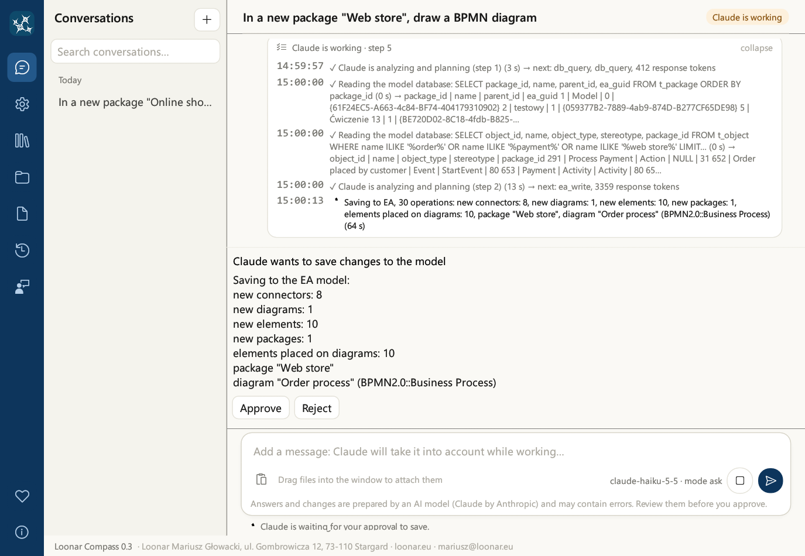

Ceci est la documentation de la version 0.6. La version la plus récente est la 0.8.1 : voir la documentation la plus récente
Guide de l'utilisateur
1. Présentation de Loonar Compass
Loonar Compass est une application de bureau autonome pour Windows : un assistant IA pour travailler avec un modèle Enterprise Architect (Sparx Systems). Vous lui écrivez en langage courant, et il :
- lit le modèle (paquetages, éléments, diagrammes, connecteurs, attributs et opérations, valeurs étiquetées et mots-clés) et décrit ce qu'il contient,
- analyse le modèle : impact de la modification d'un élément sur le reste du modèle, endroits où les opérations sont utilisées, éléments sans connecteurs,
- modifie le modèle : crée des paquetages, des diagrammes, des éléments et des connecteurs, ajoute des attributs, des opérations, des valeurs étiquetées et des mots-clés, dispose les éléments sur les diagrammes, les déplace, les retire d'un diagramme ou les supprime du modèle, les colore, ajoute des légendes, copie des paquetages et en crée des baselines,
- dessine des diagrammes à partir d'une description, d'une photo, d'un croquis ou d'un fichier joint,
- affiche les diagrammes sous forme d'images dans le chat, tels qu'Enterprise Architect les dessine,
- prépare des documents à partir du contenu du modèle : Word, Excel, images PNG et pages Confluence, y compris à partir de modèles de documents,
- retient les points convenus d'une conversation à l'autre (conventions de modélisation, préférences, corrections).
L'application utilise le modèle de langage Claude Haiku 5.5 (Anthropic) via Internet, avec votre propre clé API. Elle se connecte au modèle EA de deux façons : elle le lit directement (dans la base PostgreSQL ou dans le fichier .qea/.qeax) et elle y écrit par l'intermédiaire d'Enterprise Architect, avec le compte utilisateur du modèle indiqué dans les paramètres lorsque le modèle en possède un. Avec un fichier de modèle que vous avez ouvert dans EA, les modifications passent par votre fenêtre EA ; sinon, EA est lancé en arrière-plan.
L'interface et les réponses de l'assistant sont disponibles en quatre langues : polonais, anglais, allemand et français (chapitre 5). L'application est gratuite, y compris pour un usage commercial (chapitre 20).
4. Fenêtre de l'application et navigation
Sur le côté gauche de la fenêtre se trouve une barre de navigation bleu marine avec des icônes. Lorsque vous survolez une icône avec la souris, son nom apparaît. Un clic change de vue.
| Icône | Contenu |
|---|---|
| Chat | La liste des conversations et la conversation avec l'assistant (chapitres 6 et 15) |
| Paramètres | Clé API, base de données du modèle, Enterprise Architect, langue et mode de validation, nouvelles versions, Confluence (chapitre 5) |
| Mémoire de l'assistant | Les points que l'assistant a retenus d'une conversation à l'autre (chapitre 13) |
| Modèles de documents | Les modèles de documents que l'assistant remplit avec le contenu du modèle EA (chapitre 12) |
| Journal des modifications du modèle | Les enregistrements de l'assistant dans le modèle, avec export vers Excel (chapitre 14) |
| Nouveautés | La liste des fonctionnalités et des limitations connues de chaque version |
| Signaler un bug | Formulaire de signalement de bug avec images (chapitre 18) |
| Soutenir le projet (icône de cœur, en bas de la barre, au-dessus de « À propos ») | Soutien volontaire au développement de l'application, liens vers GitHub et loonar.eu |
| À propos (en bas de la barre) | Version, propriétaire de l'application, liens (politique de confidentialité, code source sur GitHub, loonar.eu), marques, licence et composants open source (chapitre 20) |
Un « ! » orange sur les icônes Paramètres, Mémoire de l'assistant et Modèles de documents signifie qu'après un changement de langue, la traduction n'est pas encore terminée (chapitre 5).
Soutenir le projet. Loonar Compass est gratuit, y compris pour un usage commercial, et le restera. S'il vous fait gagner du temps, vous pouvez soutenir son développement par une contribution volontaire : le bouton Soutenir sur suppi.pl ouvre https://suppi.pl/loonar. La contribution finance notamment un certificat de signature de code. Vous pouvez aussi aider en signalant des bugs et des idées, en recommandant l'application ou en donnant une étoile au projet sur GitHub ; la vue contient les liens vers le code source sur GitHub et vers loonar.eu.
Vue du chat
- La liste des conversations à gauche est regroupée en « Aujourd'hui », « Hier », « 7 derniers jours » et « Plus ancien ». Vous commencez une nouvelle conversation avec le bouton +. La conversation sélectionnée est mise en surbrillance.
- L'en-tête de la conversation affiche son titre, le bouton Modèle : … avec le modèle de la conversation (chapitre 15) et, pendant que l'assistant travaille, l'indicateur « Claude travaille ».
- Messages : les vôtres sont dans une bulle beige, les réponses de l'assistant portent l'icône de l'application. Chaque message indique l'heure (les plus anciens aussi la date).
- L'écran d'une nouvelle conversation affiche le logo, une indication de ce que vous pouvez faire et le modèle qu'utilisera la conversation, avec le bouton Choisir un autre modèle….
- La carte de message en bas : le champ de texte, le bouton de collage, le modèle et le mode de validation, ainsi que les boutons ronds d'envoi et d'arrêt (chapitre 6). Sous la carte, un rappel : « Les réponses et les modifications sont préparées par un modèle d'IA (Claude d'Anthropic) et peuvent contenir des erreurs. Vérifiez-les avant de les valider. »
5. Paramètres et langue
La vue Paramètres comporte six cartes. Vous enregistrez chacune séparément avec le bouton situé sous la carte, et l'application teste aussitôt les données saisies. Le résultat apparaît sous le bouton : en vert avec une description ou en rouge avec la cause de l'erreur.

| Carte | Champs | Ce que vérifie le test |
|---|---|---|
| 1. Claude | Jetons max. (limite de longueur d'une réponse du modèle) et clé API Claude ; le modèle utilisé est affiché en lecture seule. Sous les champs, une note indique ce qui est envoyé à Anthropic (chapitre 16). | Envoie une courte requête au modèle |
| 2. Modèle | Au choix : Base PostgreSQL (serveur, port, nom de la base, compte de la base, mot de passe de la base conservé dans le Gestionnaire d'identification Windows, chiffrement de la connexion) ou Fichier EA (.qea, .qeax) (Fichier du modèle ; le bouton … ouvre la sélection de fichier) | Base : se connecte, compte les paquetages, éléments et diagrammes, indique si la connexion est chiffrée et avertit si le compte de la base est un superutilisateur. Fichier : l'ouvre en lecture seule et compte les paquetages, éléments et diagrammes |
| 3. Enterprise Architect | Chemin d'EA.exe (le bouton … ouvre la sélection de fichier), compte utilisateur EA, mot de passe du compte EA (pour un fichier de modèle sans sécurité, ces deux champs restent vides) | Ouvre le modèle dans EA (pour un fichier de modèle que vous avez ouvert : dans votre fenêtre EA) et connecte le compte indiqué ; indique si la sécurité du modèle est activée. Le démarrage d'EA prend de quelques secondes à plus de dix secondes. |
| 4. Langue et validation des modifications | Langue de l'application ; mode de validation : ask, plan ou auto (chapitre 14) | Enregistrement uniquement |
| 5. Nouvelles versions (newsletter) | Adresse e-mail et consentement à recevoir des informations sur les nouvelles versions, avec une note sur l'utilisation de l'adresse et un lien vers la politique de confidentialité (chapitre 18) | Prépare un message dans le logiciel de messagerie |
| 6. Confluence | Adresse (commençant par https://), e-mail (Cloud uniquement), jeton, clé de l'espace, ID de la page parente (chapitre 11) | Se connecte à Confluence avec le jeton indiqué et vérifie l'accès à l'espace |
| 7. Miro | Jeton d'accès d'une application Miro avec les autorisations boards:read et boards:write (chapitre 10) | Se connecte à Miro et compte les tableaux visibles avec le jeton |
Un champ de mot de passe ou de clé laissé vide conserve la valeur actuelle. La mention enregistré à côté d'un champ indique que la valeur est déjà mémorisée ; ABSENT signifie qu'elle manque encore.
Valeurs par défaut. Lorsqu'il n'existe encore aucun paramètre, les champs Serveur, Nom de la base et Compte utilisateur EA ainsi que les mots de passe sont vides (le champ Serveur affiche l'indication grise « p. ex. 127.0.0.1 ») ; le port est 5432, le compte de la base postgres, le chemin d'EA C:\Program Files\Sparx Systems\EA\EA.exe, le mode de validation ask et Jetons max. 10000. Les paramètres existants ne sont pas modifiés.
Jetons max. Si l'assistant interrompt son travail avec un message de réponse tronquée, augmentez cette valeur (par exemple à 20000). La limite ne coûte rien en soi : vous payez le texte réellement généré.
Le mot de passe de la base ne doit pas contenir de point-virgule (;), car Enterprise Architect ne peut pas le transmettre dans sa chaîne de connexion. L'adresse Confluence doit commencer par https:// ; http:// n'est accepté que pour un serveur installé sur le même ordinateur.
Le verrouillage des paquetages lors de l'enregistrement est toujours activé ; c'est pourquoi il ne figure pas dans les paramètres.
Changement de langue
L'application fonctionne en quatre langues : polonais, anglais, allemand et français. Vous choisissez la langue dans le programme d'installation (anglais par défaut) et la modifiez dans la carte « 4. Langue et validation des modifications » :
- Choisissez une langue dans la liste Langue.
- Cliquez sur Enregistrer. L'interface passe à la nouvelle langue, et l'assistant y répond à partir du message suivant.
- L'application transpose vos contenus dans la nouvelle langue : elle remplace les modèles par défaut non modifiés par leurs versions dans la nouvelle langue, et la mémoire de l'assistant ainsi que vos modèles personnels et modifiés sont traduits par Claude.
Seules la mémoire et les modèles de documents sont traduits. L'historique des conversations n'est jamais traduit : les conversations restent dans la langue dans laquelle vous les avez menées.
Chiffrement de la connexion à la base
Le champ Chiffrement de la connexion de la carte « 2. Modèle » (option « Base PostgreSQL ») détermine si la lecture du modèle par l'assistant passe par TLS :
| Réglage | Effet |
|---|---|
| Préféré (par défaut) | TLS si le serveur le propose, sinon une connexion non chiffrée. Fonctionne avec tous les serveurs. |
| Obligatoire | TLS est obligatoire : sans TLS, l'application ne se connecte pas. Le certificat du serveur n'est pas vérifié. |
| Obligatoire, certificat vérifié | TLS est obligatoire, et le certificat du serveur est vérifié, avec le nom du serveur, dans le magasin de certificats Windows (y compris les certificats d'entreprise). |
- Le test de connexion indique si la connexion est chiffrée : « La connexion est chiffrée (TLS). » ou « La connexion n'est PAS chiffrée : le serveur ne propose pas TLS. ».
- Avec la vérification du certificat, le nom saisi dans le champ Serveur doit correspondre au nom figurant dans le certificat du serveur.
- L'administrateur de la base peut imposer TLS à tous les clients avec des entrées
hostssldans le fichierpg_hba.conf. - Le test avertit aussi lorsque le compte de la base est un superutilisateur. Ces droits ne sont pas nécessaires : utilisez un compte ordinaire disposant des droits de lecture et d'écriture sur les tables du modèle (l'assistant ne fait que lire la base, mais Enterprise Architect enregistre les modifications avec ce même compte).
- Le réglage concerne la lecture du modèle par l'assistant. La connexion d'Enterprise Architect lui-même à la base (lors des enregistrements) suit les paramètres d'EA.
6. Conversation avec l'assistant

Écrire
Vous saisissez votre message dans la carte de message en bas de la fenêtre. La carte contient le champ de texte, le bouton de collage, le nom du modèle et le mode de validation actuel, ainsi que des boutons ronds : Envoyer et, pendant que l'assistant travaille, Arrêter.
| Touche | Action |
|---|---|
| Entrée | Envoie le message |
| Maj + Entrée | Nouvelle ligne dans le message |
| ↑ dans un champ vide | Rappelle votre dernier message de cette conversation ; les appuis suivants remontent aux précédents, ↓ revient |
| Ctrl + V | Colle du texte et, lorsque le presse-papiers contient une image ou des fichiers, les ajoute en pièces jointes |
Le champ de message s'agrandit avec le texte. Les fautes d'orthographe sont soulignées en rouge à l'aide du dictionnaire du système Windows, dans la langue définie dans les paramètres du système.
Pièces jointes
Vous pouvez joindre jusqu'à 5 fichiers à un message, chacun de 10 Mo au maximum. Méthodes : faites glisser les fichiers dans la fenêtre (depuis l'Explorateur ou depuis un navigateur), collez-les depuis le presse-papiers (Ctrl + V) ou utilisez le bouton de collage de la carte de message.
| Type de fichier | Ce que voit l'assistant |
|---|---|
| Images (PNG, JPG, GIF, WebP) | L'image : photo d'un tableau blanc, croquis, capture d'écran. Dans le chat, les fichiers GIF et WebP apparaissent sous forme de carte de fichier, et non d'image. |
| Le document entier | |
| DOCX | Le texte du document |
| Fichiers texte (BPMN, XML, CSV, JSON, code…) | Le contenu du fichier ; le fichier doit être encodé en UTF-8 |
| ZIP | Les fichiers qu'il contient, chacun selon son type : au plus 20 fichiers et 30 Mo au total ; un ZIP contenu dans un ZIP n'est pas décompressé |
| Autres fichiers (XLSX, PPTX, DOC…) | Ils ne sont pas lus : l'assistant voit seulement le nom du fichier et une mention indiquant que son contenu ne peut pas être transmis |
Pendant que l'assistant travaille
- Sous les messages apparaît la carte des étapes : ce que l'assistant fait en ce moment, combien de temps cela prend et le résultat de chaque étape. Pendant le travail, la carte est développée ; une fois le travail terminé, elle se réduit à une ligne ; un clic sur l'en-tête de la carte la développe à nouveau. En français, la carte affiche un court résultat traduit (par exemple « lignes : 12 », « enregistré dans le modèle EA », « image prête ») ; le résultat détaillé, rédigé en anglais, ne s'affiche que dans l'interface anglaise.
- Vous pouvez continuer à écrire : le message suivant est mis en file d'attente et l'assistant en tiendra compte à l'étape suivante, sans interrompre son travail.
- Le bouton Arrêter interrompt le travail après l'étape en cours. Une étape déjà commencée (par exemple un enregistrement dans EA) va jusqu'à son terme.
- Une réponse compte au plus 24 étapes. Si l'assistant n'a pas terminé, il s'arrête pour éviter une boucle sans fin ; poursuivez dans un nouveau message.

Que sait faire l'assistant ? L'assistant connaît les fonctionnalités de l'application grâce à la liste des nouveautés. Demandez-lui : « Que sais-tu faire dans cette application ? ».
7. Travail avec le modèle Enterprise Architect
Écrivez comme à un collègue qui connaît EA. Désignez les paquetages et les diagrammes par leur nom. L'assistant désigne les objets du modèle par leur nom, leur paquetage et leur GUID. Voici quelques exemples de demandes.
Lecture
Le diagramme affiché apparaît dans le chat sous forme d'image. En dessous se trouvent les boutons Enregistrer sous… et Ouvrir en taille réelle.
Analyse d'impact d'une modification
L'assistant part de l'élément indiqué et suit les relations en profondeur dans le modèle (jusqu'à 6 niveaux, dans un sens ou dans les deux, éventuellement uniquement selon certains types de relations). Pour chaque élément concerné, il indique la relation par laquelle l'impact arrive, le chemin depuis l'élément de départ et les diagrammes sur lesquels figure l'élément. Vous pouvez obtenir le résultat sous forme de description, d'image, de document Word ou de classeur Excel.
Où les opérations sont utilisées
Pour une classe, un composant ou une interface, l'assistant trouve où ses opérations (services) sont appelées : sur les diagrammes de séquence (messages vers l'élément ou sa ligne de vie) et d'activité (actions appelant l'opération), avec le paquetage et l'appelant. Il indique aussi les opérations qui ne sont utilisées sur aucun diagramme.
Dessin
Sous-processus BPMN
- Intégré (embedded) : les étapes du sous-processus sont ses éléments enfants et sont dessinées dans son rectangle sur le même diagramme.
- Réduit (collapsed) : les étapes se trouvent sur un diagramme séparé, et un double-clic sur le sous-processus ouvre ce diagramme. L'assistant peut aussi lier un sous-processus (ou un autre élément) à un diagramme existant en tant que diagramme composite.
- L'assistant ajoute de nouvelles étapes à un sous-processus existant.
Modifications d'un modèle existant
L'assistant modifie aussi la position et la taille d'un élément sur un diagramme sans l'en retirer (les connecteurs sont conservés), retire un élément d'un diagramme en le laissant dans le modèle, et change le nom, la description et le stéréotype d'un diagramme existant.
Mots-clés et légendes
L'assistant définit les mots-clés des éléments (champ Keywords dans EA) et crée une légende de diagramme avec coloration automatique, comme dans EA : les éléments (selon le mot-clé, le stéréotype, le statut ou le type) et les connecteurs (par exemple selon le stéréotype) reçoivent une couleur de la légende, et la légende affiche la valeur, la couleur et le libellé.
Lignes des connecteurs
- Style de ligne (comme Line Style dans EA) : direct, automatique, ligne libre, orthogonal carré, orthogonal arrondi, arbre et latéral ; pour les connecteurs sélectionnés ou pour tous ceux du diagramme.
- Tracé d'un connecteur : l'assistant fait passer la ligne par les points de passage indiqués et les points de contact avec les côtés des éléments, par exemple d'après un croquis sur une capture d'écran.
- Masquage de connecteurs sur un seul diagramme (et réaffichage) : la relation reste dans le modèle et sur les autres diagrammes, ce qui permet d'alléger un diagramme chargé sans supprimer de relations.
Copie de paquetage et baseline
- La copie de paquetage crée un duplicata du paquetage avec tout son contenu.
- Une baseline est une version enregistrée d'un paquetage dans EA. Avant une suppression ou une restructuration importante d'un paquetage existant, l'assistant a pour consigne de créer une baseline. Ce n'est pas une garantie : pour les paquetages importants, demandez-lui explicitement une baseline et travaillez en mode ask.
- La restauration se fait dans Enterprise Architect : cliquez avec le bouton droit sur le paquetage, choisissez Manage Baselines, sélectionnez la baseline et utilisez Compare/Restore. L'assistant ne restaure pas lui-même les baselines, car la restauration par automatisation fige EA.
Bon à savoir
- Le premier appel à EA prend de quelques secondes à plus de dix secondes, car l'application lance Enterprise Architect en arrière-plan et ouvre le modèle. Les enregistrements et récupérations de diagrammes suivants prennent moins d'une seconde. Après 10 minutes sans appel, EA en arrière-plan se ferme et libère la licence. La fermeture de l'application ferme aussi sa session EA.
- Verrous. Dans un modèle dont la sécurité est activée, l'assistant verrouille un objet à son nom pendant l'enregistrement, puis lève le verrou. Il ne modifie pas un objet verrouillé par un autre utilisateur ; le message indique qui verrouille l'élément (compte ou groupe, depuis quand), son paquetage et son diagramme.
- La suppression est définitive. La suppression d'un paquetage supprime tout son contenu. Pour les modèles importants, utilisez le mode ask (chapitre 14), servez-vous des baselines et faites des sauvegardes de la base.
- Enregistrement partiel. Si l'une des opérations d'un enregistrement échoue, les opérations précédentes de ce même enregistrement restent dans le modèle ; le message indique ce qui a été enregistré.
- Vérifiez le résultat. L'assistant peut se tromper : mal lire une photo, choisir un autre type d'élément ou disposer un diagramme de façon peu lisible. Demandez-lui d'afficher le diagramme après les modifications et d'apporter des corrections.
- Les grands diagrammes sont enregistrés par l'assistant en plusieurs étapes. C'est normal.
8. Collaboration avec la fenêtre EA ouverte
Si vous avez le même modèle ouvert dans Enterprise Architect, l'assistant collabore avec votre fenêtre EA :
- il sait ce que vous avez ouvert et sélectionné : quel diagramme est ouvert et quels éléments sont sélectionnés sur le diagramme ou dans le navigateur de projet. Vous pouvez donc écrire « cet élément » ou « les tâches sélectionnées »,
- il ouvre des diagrammes dans votre fenêtre EA et indique des éléments dans le navigateur de projet,
- après un enregistrement, il actualise lui-même les diagrammes et paquetages modifiés dans votre fenêtre, sans appuyer sur F5.
Lorsque la fenêtre EA n'est pas ouverte ou affiche un autre modèle, l'assistant fonctionne normalement, et vous verrez les modifications après avoir actualisé le paquetage dans EA (F5).
9. Éditeur de diagrammes
Chaque diagramme d'EA affiché dans la conversation a un bouton Modifier le diagramme. Il ouvre le diagramme dans une fenêtre d'éditeur où vous le modifiez à la souris. L'éditeur travaille sur le modèle, pas sur une image : ce que vous enregistrez arrive dans EA par les mêmes opérations que celles de l'assistant, avec le panneau d'approbation et le journal des modifications (chapitre 14). L'éditeur a besoin de WebView2, qui fait partie de Windows 10 et 11.

Dessiner
- Déplacer, redimensionner et aligner les éléments à la souris et avec les boutons d'alignement ; Ctrl+Z et Ctrl+Y annulent et rétablissent.
- Ajouter : les boutons dépendent du type de diagramme (classes, composants, cas d'utilisation, activités, BPMN, machine à états, déploiement, paquetages, séquence). Un nouvel élément va à un emplacement libre près du milieu de la vue ; tapez tout de suite son nom.
- Relier : faites glisser d'un élément à un autre. Le type de relation se choisit dans la liste Connecteur.
- Depuis le modèle… place dans le diagramme un élément qui existe déjà dans le modèle (recherche par nom, type ou paquetage). Ses relations avec les éléments du diagramme apparaissent après l'enregistrement.
- Un double-clic sur un élément ou une relation le renomme.
Propriétés
Le panneau Propriétés montre l'élément ou la relation sélectionné. Chaque champ porte la marque modèle (la modification vaut partout où l'objet apparaît) ou diagramme (uniquement ce diagramme).
- Général : nom, alias, stéréotype, mots-clés, statut, version, auteur, phase, complexité, abstrait et notes ; le paquetage, le GUID et les dates en lecture seule. Pour une relation : nom, stéréotype, direction, multiplicités et rôles des deux extrémités, notes.
- Attributs et opérations (classes, interfaces, composants) : ajouter, modifier (visibilité, nom, type) et supprimer ; une nouvelle opération prend ses paramètres sous la forme
nom : Type, autre : Type. - Valeurs étiquetées : modifier, ajouter et retirer ; quand le profil donne les valeurs permises (par exemple les types de tâches BPMN), vous choisissez dans une liste.
- Apparence : la couleur de remplissage dans ce diagramme ou la couleur par défaut de l'élément, et le style de ligne d'une relation dans ce diagramme.
Supprimer
La touche Suppr retire sans demander ce que vous avez ajouté dans l'éditeur. Pour un objet déjà présent dans le modèle, l'éditeur demande : Retirer de ce diagramme (il reste dans le modèle et dans les autres diagrammes) ou Supprimer du modèle (définitivement, avec ses relations, de tous les diagrammes). Il indique dans quels autres diagrammes figure l'élément et combien de relations il a.

Diagrammes de séquence
Les lignes de vie ont un en-tête et une ligne pointillée ; elles ne se déplacent qu'horizontalement. Les messages vont de haut en bas dans leur ordre, avec leurs numéros, comme EA les dessine. Changez l'ordre du message sélectionné avec ▲ ▼ dans le panneau ou Alt+↑ / Alt+↓. Un nouveau message (faites glisser d'une ligne de vie à une autre) se place juste après le message sélectionné. Dans le panneau, vous choisissez le type (synchrone ou asynchrone), s'il s'agit d'une réponse, et vous pouvez le nommer d'après une opération du destinataire.

Enregistrer
- Enregistrer dans EA enregistre les modifications et ferme l'éditeur ; le résultat apparaît dans la conversation. Annuler le ferme sans enregistrer.
- Réorganiser avec l'IA enregistre les modifications et demande à l'assistant, dans la conversation, de disposer le diagramme pour qu'il se lise bien, sans rien ajouter, supprimer ni renommer.
10. Envoyer des diagrammes vers Miro
Un diagramme d'EA peut aller sur un tableau Miro sous forme de formes et de connecteurs modifiables, dans un cadre portant le nom du diagramme. Seulement d'EA vers Miro : ce qui est modifié sur le tableau ne revient pas dans le modèle.
Configuration, une seule fois :
- Dans Miro, ouvrez les paramètres de votre profil → Your apps → Create new app. Miro demande d'abord de créer une Developer team (un bac à sable gratuit pour vos applications) : acceptez ses conditions et créez-la. Dans une organisation au plan Enterprise, c'est l'administrateur de l'organisation qui la met en place.
- Donnez un nom à l'application (par exemple Loonar Compass) et laissez « Expire user authorization token » décoché : un jeton qui expire cesse de fonctionner au bout d'une heure.
- Sous Permissions, cochez
boards:readetboards:write. - Cliquez sur Install app and get OAuth token et choisissez l'organisation et l'équipe dont l'application peut utiliser les tableaux (pour un premier test, la Developer team). Copiez le jeton.
- Collez-le dans les Paramètres, carte « 7. Miro », puis cliquez sur Enregistrer et tester la connexion à Miro. Le jeton est conservé dans le Gestionnaire d'identification de Windows.
Les diagrammes ne peuvent aller que sur les tableaux de l'équipe où l'application est installée ; pour une autre organisation, installez-la aussi là-bas (avec le même bouton).
Envoi :
- Cliquez sur Envoyer vers Miro sous un diagramme dans la conversation.
- Choisissez le tableau (celui utilisé la dernière fois est proposé en premier ; le champ de recherche filtre par nom).
- La miniature montre ce qui est déjà sur le tableau (en gris) et où ira le diagramme (un cadre bleu, rouge s'il recouvrait quelque chose). L'application trouve elle-même un emplacement libre ; faites glisser le cadre pour en choisir un autre.
- Cliquez sur Envoyer vers Miro. Une fois l'envoi terminé, la conversation reçoit un message avec un lien qui ouvre le tableau sur le nouveau cadre.
Les diagrammes de séquence arrivent sous forme de lignes de vie avec des messages numérotés dans leur ordre d'EA (réponses en pointillé). Renvoyer le même diagramme place un nouveau cadre à côté du précédent : rien de ce qui a été modifié sur le tableau n'est écrasé.
11. Documents : Word, Excel, images, Confluence
L'assistant prépare des documents à partir du contenu du modèle et de la conversation. Le fichier terminé apparaît dans le chat sous forme de carte avec des boutons ; il est enregistré dans le dossier attachments des données utilisateur (chapitre 16).
| Type | Contenu | Boutons dans le chat |
|---|---|---|
| Word (DOCX) | Titres, paragraphes, listes, tableaux, diagrammes d'EA et images dessinées auparavant dans la conversation | Ouvrir, Enregistrer sous… |
| Excel (XLSX) | Plusieurs feuilles, en-têtes avec filtre et première ligne figée, nombres enregistrés comme nombres ; par exemple une liste d'éléments, une matrice, le résultat d'une analyse d'impact | Ouvrir, Enregistrer sous… |
| Image (PNG) | Une matrice (par exemple des cas d'utilisation et des exigences), un tableau, un graphique, un schéma. L'assistant voit le résultat et peut le corriger. | Enregistrer sous…, Ouvrir en taille réelle |
| Page Confluence | Le code de la page pour l'éditeur de source, ainsi que les diagrammes et images dans un dossier <page>_images | Copier le code de la page, Ouvrir le dossier des images, Enregistrer sous… |
Pages Confluence
L'assistant prépare une page au format de l'éditeur de source Confluence (storage XHTML) : titres, tableaux, listes, table des matières, panneaux (info, remarque, avertissement, astuce, section dépliable), statuts, tickets Jira, mentions de personnes et blocs de code. Les diagrammes d'EA et les images sont ajoutés en pièces jointes.
Collage manuel (sans paramètres Confluence) :
- Cliquez sur Copier le code de la page sur la carte de la page.
- Dans Confluence, ouvrez la page en modification et l'éditeur de source (Insérer → Éditeur de source), collez le code et validez.
- Cliquez sur Ouvrir le dossier des images et ajoutez les images à la page en pièces jointes.
Publication par l'assistant. Une fois la carte « 6. Confluence » remplie, l'assistant publie la page à votre demande via l'API REST : il crée une nouvelle page sous la page parente ou met à jour une page existante (désignée par son ID ou son titre). Les images sont envoyées en pièces jointes ; celles qui existent déjà reçoivent une nouvelle version. Les diagrammes sont exportés à nouveau depuis EA à chaque publication, si bien qu'une nouvelle publication actualise la page après des modifications du modèle. L'assistant se souvient des pages qu'il a publiées.
| Champ de la carte « 6. Confluence » | Que saisir |
|---|---|
| Adresse Confluence | Sur les serveurs de l'entreprise (Data Center), par exemple https://confluence.societe.fr ; dans le cloud (Cloud) https://societe.atlassian.net/wiki. L'adresse doit commencer par https:// ; http:// n'est accepté que pour un serveur installé sur le même ordinateur. |
| E-mail (Cloud uniquement) | Pour Confluence Cloud : l'e-mail du compte. Pour Data Center, laissez vide. |
| Jeton | Data Center : jeton d'accès personnel (Profil → Personal Access Tokens). Cloud : jeton API du compte. Le jeton est conservé dans le Gestionnaire d'identification Windows. |
| Espace (clé) | La clé de l'espace, par exemple ARCH |
| Page parente (ID) | Facultatif : l'ID de la page sous laquelle les nouvelles pages sont créées |
Confluence Cloud : d'où viennent les informations.
- Jeton : il se crée sur votre compte Atlassian, pas dans Confluence. Ouvrez
https://id.atlassian.com/manage-profile/security/api-tokens(compte Atlassian → Security → API tokens). Atlassian peut d'abord demander une confirmation par un code envoyé par e-mail. - Cliquez sur Create API token (le simple, pas Create API token with scopes), donnez-lui un nom, par exemple Loonar Compass, et choisissez sa validité : une semaine par défaut, un an au maximum. Cliquez sur Create et copiez le jeton : Atlassian ne l'affiche qu'une fois. Quand il expire, créez-en un nouveau et collez-le dans la carte 6.
- E-mail : l'adresse du compte Atlassian auquel appartient le jeton.
- Adresse : votre site suivi de
/wiki, par exemplehttps://votre-site.atlassian.net/wiki. - Clé de l'espace : elle figure dans l'adresse de chaque page de l'espace, après
/spaces/(par exemple…/wiki/spaces/PM/…donnePM), et dans les paramètres de l'espace. - ID de la page parente (facultatif) : le nombre dans l'adresse de la page, après
/pages/(par exemple…/pages/65818/…donne65818).
Enregistrez la carte avec le bouton Enregistrer et tester la connexion à Confluence.
12. Modèles de documents
Un modèle indique à l'assistant comment construire un document : quelles sections il doit contenir et ce qu'il faut y mettre. L'assistant le remplit avec le contenu du modèle EA et de la conversation, puis prépare une page Confluence ou un document Word.
Après l'installation, les modèles par défaut suivants sont disponibles :
- Analyse de faisabilité préliminaire,
- BRD - Exigences métier,
- Description des modifications du système,
- Description du processus.
La vue « Modèles de documents »
- La liste des modèles avec une courte description.
- Utiliser insère dans le chat une demande de préparation d'une page Confluence selon le modèle. Complétez-la (par exemple avec le nom d'un paquetage ou d'un processus, ou en demandant plutôt un document Word) et envoyez-la.
- Modifier ouvre le fichier du modèle dans le Bloc-notes.
- Ouvrir le dossier des modèles ouvre le dossier
templatesdans l'Explorateur (les installations plus anciennes peuvent encore utiliser le dossierszablony).
Vos propres modèles
Les modèles sont des fichiers Markdown contenant des instructions pour l'assistant. La première ligne a la forme > Modèle: description : cette description apparaît dans la liste. Les autres lignes commençant par > sont des indications pour l'assistant. Vous pouvez modifier les modèles existants, ajouter vos propres fichiers dans le dossier des modèles ou demander à l'assistant de créer un modèle à partir d'un document exemple :
Lorsque l'assistant remplace un modèle existant, il demande d'abord votre validation (modes ask et plan, chapitre 14).
13. Mémoire de l'assistant
L'assistant retient les points convenus d'une conversation à l'autre : conventions de modélisation, vos préférences, corrections et faits concernant les projets. Il les connaît dans chaque nouvelle conversation. Un point sur le même sujet est mis à jour au lieu d'être dupliqué, et les points obsolètes sont supprimés.
L'assistant enregistre lui-même les points importants et le signale en une phrase dans sa réponse. Vous pouvez aussi le lui demander explicitement en commençant par « retiens… » :
Les points retenus sont communs à tous les modèles. Si vous voulez qu'un point ne s'applique qu'à un seul modèle, précisez-le, par exemple « retiens cela uniquement pour ce modèle » : le point n'est alors utilisé que dans les conversations avec ce modèle, et la vue « Mémoire de l'assistant » l'indique par la mention « Uniquement pour le modèle … ».
En mode ask ou plan, l'enregistrement d'un point passe par la validation, comme une modification du modèle (chapitre 14). L'enregistrement n'interrompt pas le travail de l'assistant sur la tâche en cours. Le contenu complet de la mémoire est envoyé à Claude avec chaque requête (chapitre 16).
La vue « Mémoire de l'assistant »
- La liste des points avec leur date.
- Supprimer efface le point sélectionné.
- Ouvrir le dossier de la mémoire ouvre le dossier
memorydans l'Explorateur. Les points y sont des fichiers Markdown, et l'index se trouve dans le fichierMEMORY.md.
14. Validation des modifications et journal des modifications
Vous définissez le mode dans la vue Paramètres, carte 4. Il détermine si et quand l'application demande votre accord avant un enregistrement dans EA, avant l'enregistrement d'une note dans la mémoire de l'assistant et avant le remplacement d'un modèle de document existant. La lecture du modèle et l'affichage des diagrammes ne nécessitent jamais d'accord. Le mode actuel est aussi visible dans la carte de message.
| Mode | Quand il demande l'accord | Pour qui |
|---|---|---|
| ask | Avant chaque enregistrement | Travail sur un modèle important ; contrôle total |
| plan | Une fois, avant le premier enregistrement d'une réponse de l'assistant. Les enregistrements suivants de cette réponse se font sans nouvelle demande, sauf la suppression et le déplacement d'objets ainsi que la copie de paquetages, qui demandent toujours une nouvelle validation. | Tâches plus importantes, lorsque le premier enregistrement montre la direction |
| auto | Jamais (exception : publication dans Confluence) | Modèle de test ou travail facile à annuler |
Lorsqu'un accord est nécessaire, le panneau « Claude veut enregistrer des modifications dans le modèle » apparaît au-dessus du champ de message, avec une description des modifications (combien de paquetages, diagrammes, éléments, connecteurs, ce qui est supprimé) et les boutons Valider et Refuser. Pour une suppression, un déplacement ou une copie de paquetage, le panneau donne le nom de chaque objet concerné (lignes SUPPRESSION, DÉPLACEMENT et COPIE). Un enregistrement refusé ne modifie pas le modèle ; l'assistant est informé du refus et peut proposer autre chose.

Journal des modifications
Chaque enregistrement de l'assistant dans le modèle, y compris en cas d'échec, est consigné dans le journal des modifications (fichier audit_log.jsonl). Les enregistrements que vous refusez, ainsi que ceux rejetés avant l'envoi à EA (par exemple en cas de conflit de version), n'y figurent pas. La vue Journal des modifications du modèle affiche les 200 dernières entrées, de la plus récente à la plus ancienne : résultat, heure, compte EA, base et description des modifications. Le bouton Exporter vers Excel enregistre l'ensemble du journal sous forme de classeur XLSX, par exemple pour une revue des modifications en équipe ; Ouvrir le fichier journal ouvre le fichier dans le Bloc-notes.
15. Conversations : historique, recherche, travail en arrière-plan
- Nouvelle conversation : le bouton + au-dessus de la liste des conversations. Chaque conversation est enregistrée et réapparaît après le redémarrage de l'application.
- Groupes : les conversations sont regroupées en « Aujourd'hui », « Hier », « 7 derniers jours » et « Plus ancien ».
- Recherche : le champ « Rechercher dans les conversations… » filtre la liste par titre et par contenu des messages.
- Renommer : cliquez sur le crayon à côté de la conversation sélectionnée, saisissez un nom ; Entrée enregistre, Échap annule.
- Supprimer : les conversations ne peuvent pas être supprimées dans l'application. Si nécessaire, supprimez le fichier de la conversation dans le dossier
history(chapitre 16). - Plusieurs conversations à la fois : pendant que l'assistant travaille, vous pouvez commencer une nouvelle conversation ou passer à une autre. Le travail commencé se poursuit en arrière-plan.
- Modèle de la conversation : chaque conversation travaille avec son propre modèle. Une nouvelle conversation utilise le modèle par défaut défini dans les paramètres (l'écran d'une nouvelle conversation indique lequel) ; le bouton Choisir un autre modèle… ou le bouton Modèle : … de l'en-tête ouvre la fenêtre « Modèle de cette conversation ». Vous y choisissez Par défaut, depuis les paramètres ou Autre modèle : Base PostgreSQL (serveur, port, nom de la base, compte de la base, mot de passe, chiffrement de la connexion) ou Fichier EA (.qea, .qeax), ainsi que le compte EA. Tester la connexion ouvre le modèle et compte les paquetages, éléments et diagrammes ; Enregistrer l'attribue à la conversation. Les mots de passe d'une connexion différente de celle des paramètres sont conservés dans le Gestionnaire d'identification Windows. Si vous changez le modèle d'une conversation qui contient déjà des messages, le changement s'applique aux messages suivants ; les réponses précédentes concernent l'ancien modèle.
- Fichier EA déposé sur la fenêtre : un fichier .qea ou .qeax déposé sur le chat devient le modèle de la conversation au lieu d'une pièce jointe ; dans une conversation qui contient déjà des messages, une nouvelle conversation commence avec ce fichier.
- Conversations des versions précédentes : au premier démarrage de la version 0.5 ou plus récente, elles reçoivent une copie du modèle défini dans les paramètres ; elles continuent donc à travailler avec ce modèle même si les paramètres changent par la suite. Le survol d'une conversation dans la liste affiche son modèle.
| Point à côté d'une conversation | Signification |
|---|---|
| ● orange | L'assistant travaille dans cette conversation (ou attend votre accord pour enregistrer) |
| ● vert | L'assistant a terminé son travail en arrière-plan, et vous n'avez pas encore consulté le résultat |
Les enregistrements dans EA provenant de différentes conversations s'exécutent les uns après les autres, pas simultanément. EA en arrière-plan ne garde qu'un seul modèle ouvert à la fois : passer d'une conversation à une autre qui utilise un modèle différent le rouvre, ce qui prend de quelques secondes à environ 25 secondes. Lorsque le chat a défilé vers le haut, le cercle avec une flèche au-dessus du champ de message vous ramène à la fin de la conversation.
16. Données, sécurité et confidentialité
Où se trouvent vos données
| Données | Emplacement |
|---|---|
| Programme | Le dossier d'installation : %LOCALAPPDATA%\Programs\Loonar Compass (pour vous uniquement) ou %ProgramFiles%\Loonar Compass (pour tous les utilisateurs) |
Paramètres (app.properties, sans aucun secret), historique des conversations (history), pièces jointes et documents créés : Word, Excel, PNG, pages Confluence et leurs dossiers d'images <page>_images (attachments), mémoire de l'assistant (memory, index MEMORY.md), modèles de documents (templates), journal des modifications (audit_log.jsonl), pages Confluence publiées (confluence_pages.json) | Le dossier des données utilisateur : %APPDATA%\Loonar Compass. Chaque utilisateur Windows de l'ordinateur a le sien. |
| Clé API Claude, mot de passe du compte EA, mot de passe de la base, jeton Confluence | Gestionnaire d'identification Windows, entrées « loonar-compass » (protégées par le système) |
L'historique des conversations est enregistré sous forme de fichiers ordinaires dans votre profil Windows : il est protégé par votre compte Windows, mais l'application ne le chiffre pas.
Ce qui est envoyé à Anthropic
Pour que l'assistant puisse répondre, chaque requête envoie au service Claude (Anthropic), avec votre clé API : la conversation, les fichiers joints, le contenu complet de la mémoire de l'assistant, la liste des modèles de documents avec leurs descriptions, les résultats des requêtes de l'assistant sur le modèle (noms et descriptions des paquetages, éléments, diagrammes) et les images des diagrammes. La base entière n'est pas envoyée, seulement ce que l'assistant a demandé. La chaîne de connexion de la fenêtre EA ouverte n'est jamais transmise au modèle. Après un changement de langue, le contenu de la mémoire et des modèles à traduire est également envoyé à Claude. Loonar ne reçoit pas ces données.
Droits de l'assistant
- L'assistant lit la base dans une session en lecture seule, et un fichier de modèle en lecture seule, avec une limite de durée des requêtes ; les fonctions du serveur qui lisent des fichiers ou agissent sur d'autres sessions sont bloquées. Toutes les modifications passent par Enterprise Architect, avec le compte indiqué dans les paramètres ; les droits et verrous de ce compte s'y appliquent donc.
- Dans Confluence, l'assistant agit avec les droits du jeton de la carte 6 et ne publie qu'après votre validation.
- L'assistant n'a accès à aucun fichier sur le disque en dehors de ceux que vous lui joignez vous-même et de ses propres dossiers de mémoire et de modèles. Les images qu'il dessine ne peuvent lire aucun fichier sur le disque ni sur le réseau.
- L'assistant traite le contenu des pièces jointes, des documents et du modèle comme des données, et non comme des instructions. Vérifiez néanmoins chaque modification avant de la valider.
Connexions et chiffrement
- API Claude et Confluence : uniquement via HTTPS (pour Confluence,
http://n'est accepté que pour un serveur installé sur le même ordinateur). - Base du modèle : la connexion peut être chiffrée avec TLS, selon le réglage de la carte 2 (chapitre 5). Les administrateurs peuvent imposer TLS à tous les clients avec des entrées
hostssldanspg_hba.conf. La connexion d'Enterprise Architect lui-même à la base suit les paramètres d'EA. - Proxy : l'application utilise le proxy défini dans les paramètres Internet de Windows ainsi que les variables d'environnement
HTTPS_PROXYetALL_PROXY. Les scripts PAC et l'authentification NTLM/Kerberos sur le proxy ne sont pas pris en charge. - Erreurs temporaires de l'API Claude (surcharge 529 et autres erreurs 5xx, limite de requêtes 429) : l'application réessaie automatiquement.
17. Résolution des problèmes
| Symptôme | Que faire |
|---|---|
| L'application s'ouvre sur la vue « Paramètres » | Des paramètres ou des secrets manquent. Remplissez les cartes et enregistrez chacune avec son bouton « Enregistrer et tester… ». |
| « Le fichier de paramètres … contient une erreur » | Une valeur du fichier app.properties est incorrecte ; le message indique laquelle. Corrigez la valeur dans la carte concernée et enregistrez de nouveau la carte. |
| Test de la clé : « L'API Claude a refusé la clé API (401) » | La clé est erronée ou révoquée. Collez la clé actuelle depuis la console Anthropic. |
| « … une réponse qui ne provient pas de l'API (un proxy ou un pare-feu bloque peut-être api.anthropic.com) » | Un proxy ou un pare-feu bloque la connexion. Demandez à votre service informatique d'autoriser api.anthropic.com en HTTPS. Les scripts PAC et l'authentification NTLM/Kerberos sur le proxy ne sont pas pris en charge (chapitre 16). |
| « L'API Claude est surchargée ou temporairement indisponible » ou « La limite de requêtes de l'API Claude est atteinte (429) » | L'application a déjà réessayé automatiquement. Patientez un instant et renvoyez votre message. |
| Test du fichier : « cela ne ressemble pas à un fichier de modèle Enterprise Architect » | Choisissez un fichier de projet .qea ou .qeax créé par Enterprise Architect 16 ou une version ultérieure. Les anciens fichiers .eap/.eapx doivent d'abord être convertis en .qea dans EA (transfert de projet). |
| Test de la base : pas de connexion | Vérifiez le serveur, le port, le nom de la base, le compte et le mot de passe, et assurez-vous que le serveur PostgreSQL accepte les connexions depuis cet ordinateur. |
| « La connexion n'est PAS chiffrée : le serveur ne propose pas TLS » ou échec de la vérification du certificat | Demandez à l'administrateur de la base d'activer TLS. En mode « Obligatoire, certificat vérifié », le certificat du serveur doit être approuvé dans le magasin de certificats Windows et correspondre au nom saisi dans le champ Serveur ; sinon, choisissez « Obligatoire » ou « Préféré ». |
| Le test de la base avertit que le compte est un superutilisateur | Les droits de superutilisateur ne sont pas nécessaires. Demandez à l'administrateur un compte ordinaire disposant des droits de lecture et d'écriture sur les tables du modèle : l'assistant ne fait que lire la base, mais Enterprise Architect enregistre les modifications avec ce même compte. |
| « EA n'a pas répondu dans les 300 s » | Le plus souvent, un compte ou un mot de passe d'utilisateur du modèle erroné (EA attend alors sur une fenêtre de connexion invisible) ou aucune licence disponible. Corrigez les données dans la carte 3 et utilisez « Enregistrer et tester la connexion à EA ». |
| Le premier enregistrement ou le premier diagramme prend du temps | C'est le démarrage d'Enterprise Architect en arrière-plan (de quelques secondes à plus de dix secondes). Les appels suivants sont rapides. |
| « La réponse du modèle a été tronquée à la limite de … jetons » | Augmentez « Jetons max. » dans la carte 1 ou demandez que la tâche soit effectuée en plusieurs parties plus petites. |
| « L'assistant a effectué 24 étapes sans terminer » | L'assistant s'est arrêté pour éviter une boucle sans fin. Poursuivez dans un nouveau message ou divisez la tâche en parties plus petites. |
| Les modifications ne sont pas visibles dans Enterprise Architect | Si le même modèle est ouvert dans EA, l'assistant l'actualise lui-même. Sinon, actualisez le paquetage dans le navigateur de projet (F5) ou rouvrez le diagramme. |
| « Impossible de verrouiller l'objet » | L'objet est verrouillé par un autre utilisateur du modèle ; le message indique lequel. Levez le verrou dans EA ou demandez à son propriétaire de le faire. |
| « ! » orange sur les icônes Paramètres, Mémoire de l'assistant, Modèles de documents | Après un changement de langue, la traduction attend une connexion à Claude. Vérifiez la clé API dans la carte 1 et cliquez sur « Traduire maintenant » dans la carte 4. |
| La publication dans Confluence échoue | Vérifiez la carte 6 avec le bouton « Enregistrer et tester la connexion à Confluence » : adresse (https://), jeton, clé de l'espace et, pour Cloud, également l'e-mail. Vous pouvez aussi coller la page manuellement avec le bouton « Copier le code de la page ». |
| Après une baseline, il faut revenir à une version antérieure du paquetage | Dans EA : clic droit sur le paquetage → Manage Baselines → Compare/Restore. |
| L'assistant affirme ne pas savoir faire quelque chose | Demandez : « Que sais-tu faire dans cette application ? ». Si la fonctionnalité figure dans la liste de la vue « Nouveautés », dites-le-lui explicitement et demandez-lui de réessayer. |
| Impossible de faire glisser des fichiers dans la fenêtre | L'application a été lancée en tant qu'administrateur. Fermez-la et lancez-la avec le raccourci habituel. |
| Windows SmartScreen avertit au lancement du programme d'installation | Le programme d'installation n'est pas encore signé. Cliquez sur « Informations complémentaires », puis sur « Exécuter quand même ». Si le contrôle intelligent des applications (Smart App Control) est activé, les applications non signées sont bloquées : attendez la version signée. |
| Message d'erreur inattendue, l'application se ferme | Les détails sont enregistrés dans le fichier %TEMP%\loonar-compass-crash.log. Signalez le problème (chapitre 18) en joignant ce fichier. |
18. Signalement de bugs et nouvelles versions
Signaler un bug
- Cliquez sur l'icône Signaler un bug dans la barre de navigation.
- Saisissez un objet et une description : ce que vous faisiez, ce que vous attendiez, ce qui s'est passé. La description est obligatoire.
- Ajoutez des images, par exemple des captures d'écran : faites-les glisser dans la fenêtre, collez-les depuis le presse-papiers (Ctrl + V) ou choisissez-les sur le disque. Les images ajoutées s'affichent sous forme de miniatures ; leur taille totale est limitée à 15 Mo.
- Indiquez éventuellement l'adresse e-mail à laquelle je dois répondre. L'option « Joindre les informations techniques » (version de l'application, système, modèle, mode de validation, dernier message ; sans mots de passe ni clés) est cochée par défaut ; vous pouvez la décocher.
- Cliquez sur Envoyer le signalement. Un message prêt à l'envoi, adressé à l'auteur avec les images en pièces jointes, s'ouvre dans le logiciel de messagerie de Windows. Vérifiez-le et envoyez-le.
Les copies temporaires des images sont supprimées dès que le logiciel de messagerie les a prises en charge. Si le logiciel de messagerie n'accepte pas les pièces jointes provenant d'autres applications, un message sans images s'ouvre, ainsi que le dossier contenant les images : faites-les glisser dans le message. Dans ce cas seulement, les copies restent dans ce dossier.
Confidentialité. Le signalement (description, captures d'écran, informations techniques facultatives et votre adresse e-mail) est envoyé à Loonar Mariusz Głowacki et sert uniquement à vous répondre et à améliorer l'application ; il est conservé jusqu'à 2 ans après la clôture du dossier. Retirez les données personnelles et confidentielles des captures avant l'envoi. La vue contient un lien vers la politique de confidentialité.
Nouvelles versions (newsletter)
Dans la carte « 5. Nouvelles versions (newsletter) » des paramètres, saisissez votre adresse e-mail et cochez la case « je souhaite recevoir des informations sur les nouvelles versions » : un court e-mail à la sortie d'une nouvelle version, avec une description des modifications et l'endroit où la télécharger, sans publicité. Votre choix est mémorisé dans les paramètres, et l'inscription comme la désinscription sont envoyées à l'auteur par un message du logiciel de messagerie.
Votre adresse n'est utilisée que pour les informations sur les nouvelles versions, sur la base de votre consentement, jusqu'à son retrait : décochez la case et enregistrez, ou écrivez un e-mail. Responsable du traitement : Loonar Mariusz Głowacki, mariusz@loonar.eu. La carte contient un lien vers la politique de confidentialité.
20. Licence, marques et contact
Licence. Loonar Compass est un logiciel gratuit (freeware) : l'utilisation est gratuite, y compris à titre professionnel et commercial, sans limite de durée ni de territoire ; la modification de l'application est interdite. La licence contient aussi des règles concernant les résultats de l'IA, les données et les composants open source. Le texte intégral se trouve dans la vue À propos et dans le fichier LICENSE.txt du dossier d'installation ; seule la version polonaise de la licence fait foi. La liste des fonctionnalités et des limitations connues de cette version se trouve dans la vue Nouveautés.
Confidentialité et mentions légales. Politique de confidentialité : https://loonar.eu/fr/privacy/. Mentions légales : https://loonar.eu/fr/legal/.
Composants open source. L'application contient des bibliothèques et des polices open source ; chacune conserve sa propre licence. Leur liste se trouve dans le fichier THIRD-PARTY-NOTICES.txt du dossier d'installation ; dans la vue À propos, le bouton Afficher les licences des composants ouvre ce fichier.
Soutien. Si l'application vous est utile, vous pouvez soutenir son développement par une contribution volontaire : vue Soutenir le projet ou https://suppi.pl/loonar.
Contact. Propriétaire de l'application : Loonar Mariusz Głowacki, ul. Gombrowicza 12, 73-110 Stargard. E-mail : mariusz@loonar.eu, site : https://loonar.eu, code source : https://github.com/loonar-eu/loonar-compass. Le plus simple pour signaler un bug est d'utiliser la vue Signaler un bug.
Loonar Compass 0.6. Sparx Systems et Enterprise Architect sont des marques déposées de Sparx Systems Pty Ltd. Claude et Anthropic sont des marques d'Anthropic, PBC. Atlassian, Confluence et Jira sont des marques d'Atlassian. Microsoft, Windows, Word et Excel sont des marques du groupe Microsoft. PostgreSQL est une marque déposée de la PostgreSQL Community Association. Loonar Compass est un produit indépendant, sans lien avec ces sociétés, qui ne l'approuvent ni ne le parrainent.